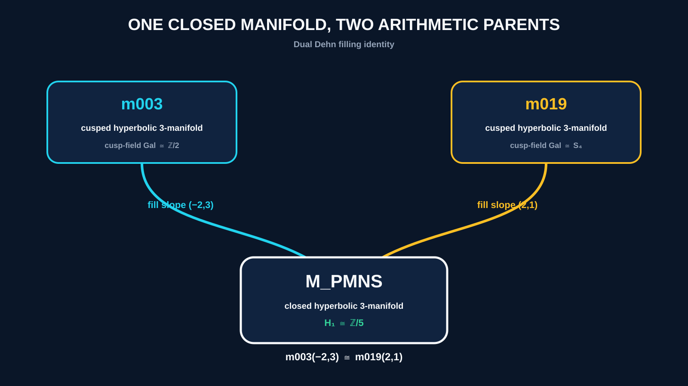
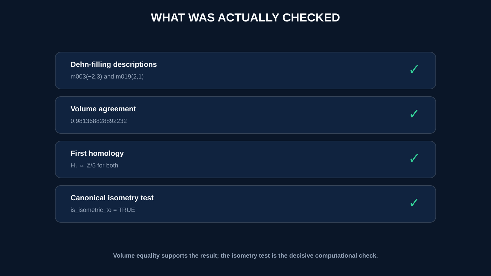
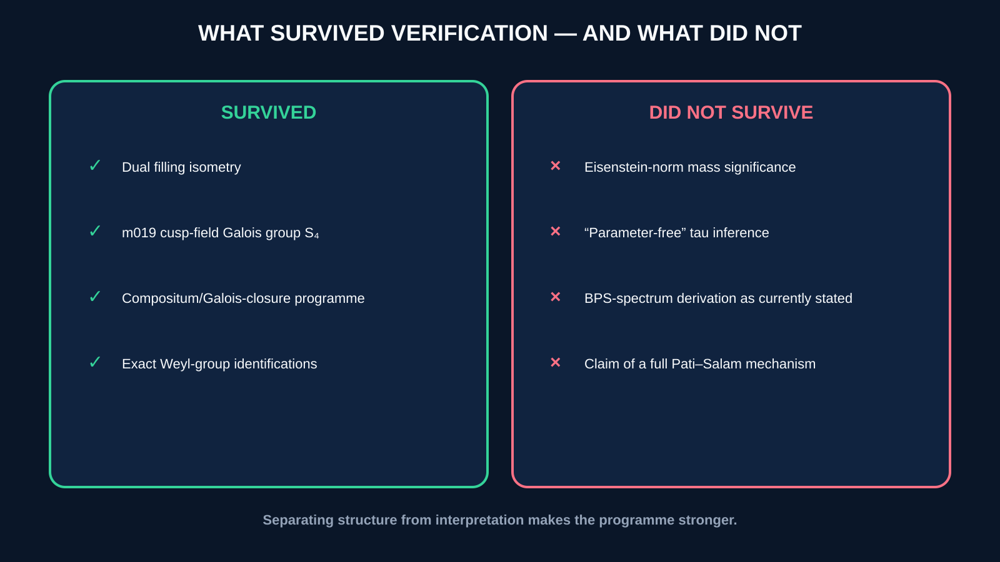
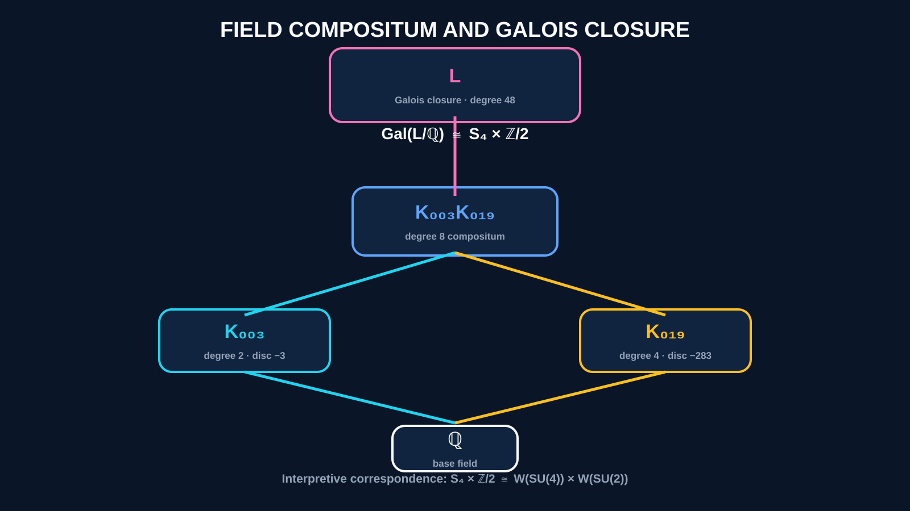

Hyperbolic Flavor Geometry
Standard Model flavor parameters from arithmetic hyperbolic 3-manifolds
The Hyperbolic Flavor Geometry (HFG) program proposes that the flavor structure of the Standard Model — the mixing matrices, CP phases, and mass hierarchies of quarks and leptons — arises from the arithmetic geometry of compact hyperbolic 3-manifolds.
The Meyerhoff manifold — the unique minimum-volume closed hyperbolic 3-manifold with first homology H₁=ℤ/5, and the second-smallest known closed hyperbolic 3-manifold by volume globally — encodes the PMNS lepton mixing matrix. Its volume v₀ = 0.9814 is the fundamental Bloch quantum of an arithmetic family organized by the discriminant −283 field. It is not adjusted to fit the data.
Three cusped manifolds — m003, m006, m019 — have cusp-shape Galois groups isomorphic to Weyl(SU(2)), Weyl(SU(3)), Weyl(SU(4)): the gauge groups of the Standard Model. Every disc=−283 cusped manifold in the census has volume a rational multiple of v₀.
A ~53-minute walkthrough of the full program — the flavor problem, the two encoding manifolds, the Galois–Weyl correspondence, the CP phase prediction, and the open questions, honestly labeled as proved, computed, or conjectural.
Before the theorems: what problem is this actually solving, and why hyperbolic geometry?
The theorems below are about the rightmost two boxes. The middle box is the reason any of this is worth reading.
In the quartic field K = ℚ(w), w⁴ = w+1 (discriminant −283), the tetrahedral shapes of m019 and m178 are explicit units:
Since D(z) = D(T(z)) (Bloch-Wigner functional equation), all three shapes have equal D-values, giving:
The embedding table confirms the Borel regulator interpretation: D(u₁) = (0, −v₀, +v₀, 0) across the four field embeddings, exactly as predicted by Borel regulator theory for a field with signature (2,1).
| Result | Manifold | Value | Status |
|---|---|---|---|
| PMNS lepton mixing | m003(−2,3) | fitness 0.005087 | global min |
| CKM quark mixing | m006(−5,2) | fitness 0.003618 | global best (len-6 scan) |
| CKM statistical null | m006(−5,2) | same-search Monte Carlo | p ≤ 0.005 |
| ITF sig=(8,1) uniqueness | m006(−5,2) | 1 of 948 H₁=ℤ/5 candidates | census-verified |
| φ automorphic origin | p=31, level 8773 | 31→χ₅→ζ₅→ℚ(√5)→φ | proved Jun 2026 |
| CP phase: manifold invariant | m003(−2,3), ℤ/5 | pair (1,4) D-sum 15.9° vs 49.0° | 3.1× — Jun 2026 |
| CP phase δ = 195.91° | m003 holonomy | PDG: 197.0° | 0.55% |
| N(16+12ω) = 208 ≈ m_μ/m_e | N(16+12ω) | Eisenstein norm | 0.59% |
| m_τ/m_e = 3477 | N(68+37ω) | Eisenstein norm | 0.006% |
| Gal(m003) = ℤ/2 = Weyl(SU(2)) | x²−x+1, disc=−3 | exact | |
| Gal(m006) = S₃ = Weyl(SU(3)) | x³+2x+1, disc=−59 | exact | |
| Gal(m019) = S₄ = Weyl(SU(4)) | x⁴−x−1, disc=−283 | exact | |
| Dual surgery: m003(−2,3) = m019(2,1) | M_PMNS | 15 sig. figs. | exact |
| δ(m019)=12, δ(m178)=34 | disc=−283 cusp field | peripheral det. | exact |
| 2·cosh(2m·log φ) = L_{2m} | golden ratio identity | integer Wilson loops | exact |
| vol(m019) = 3·v₀ | z_A=w³, orbit period 3 | Bloch quantum | proved |
| vol(m178) = 4·v₀ | z_S=u₁⁴, z_B=u₁⁻¹ | unit orbit | proved |
| All disc=−283 vols in v₀·ℚ | 6/6 census manifolds | 3,4,4,5,11/2,6 | numerical |
Cusp shape τ = eiπ/3
Trace field ℚ(√−3), disc=−3
Gal ≅ ℤ/2 = Weyl(SU(2))
Shape unit: D(w³) = v₀
Cusp shape: x³+2x+1
Disc=−59, Gal=S₃=Weyl(SU(3))
Filling m006(−5,2) = M_CKM
ITF sig=(8,1), disc=−271488204251
Unique H₁=ℤ/5 manifold with sig=(8,1) in 11,031-census
Cusp shape: x⁴−x−1, disc=−283
Gal=S₄=Weyl(SU(4))
Shapes: w³, −w, w⁻⁴ (units in K)
vol = 3·v₀
The dual surgery identity m003(−2,3) = m019(2,1) = M_PMNS links the two SU(2) and SU(4) parents. Their compositum has Galois group S₄×ℤ/2 = Weyl(SU(4)×SU(2)_L), the Weyl group of the Pati–Salam gauge sector.
reproduce/verify_frobenius.py.
reproduce/verify_three_ray.py.
reproduce/verify_trace.py.
reproduce/signature_enum_test.py.
Supporting graphics for the dual surgery theorem above — also published with the Substack writeup.




The HFG Dispatch, in full — synced from the live archive, Aug 2026.
Visual, interactive explainers — no equations required.
All results are reproducible using SnapPy and SageMath. All scripts run in WSL with conda activate sage and print PASS/FAIL per claim.
# Theorem A: Frobenius discriminant — p=31 is unique (< 10 seconds) python3 reproduce/verify_frobenius.py # → THEOREM A: VERIFIED [PASS] # Theorem B: Three-ray eigenvalue structure (< 30 seconds) python3 reproduce/verify_three_ray.py # → THEOREM B: VERIFIED [PASS] # Theorem C: Fricke collapse, ITF generator, 122-node quotient (< 5 min) python3 reproduce/verify_trace.py # → THEOREM C: VERIFIED [PASS] # Statistical validation: same-search null p=0.005 (< 10 minutes) python3 reproduce/census_null_test.py # → TAIL -- m006(-5,2) is special (p=0.005) # Arithmetic uniqueness: m006 is unique H1=Z/5 manifold with ITF sig=(8,1) # Phase 1+2 ~2 min; Phase 3 fitness comparison ~15 hours python3 reproduce/signature_enum_test.py # → Phase 2: 1 sig=(8,1) manifold found (m006(-5,2))
import snappy
# Verify dual surgery
M1 = snappy.Manifold("m003(-2,3)")
M2 = snappy.Manifold("m019(2,1)")
print(M1.is_isometric_to(M2)) # True
# Verify Bloch volume quantum
v0 = float(M1.volume())
print(float(snappy.Manifold("m019").volume()) / v0) # 3.0
print(float(snappy.Manifold("m178").volume()) / v0) # 4.0
# Verify unit orbit in K=Q(w), w^4=w+1
from sage.all import NumberField, QQ
K = NumberField(QQ['x'].gen()^4 - QQ['x'].gen() - 1, 'w')
w = K.gen()
u1 = 1 - w^3
print(-w == u1^(-1)) # True
print(w^(-4) == u1^4) # True
→ github.com/drmlgentry/hyperbolic-flavor-geometry
→ PyPI: latticefit
New results, open problems, and honest frontier science. Free to read. Paid subscribers get the computational notebooks and proofs.